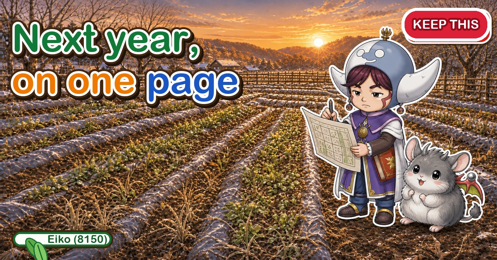
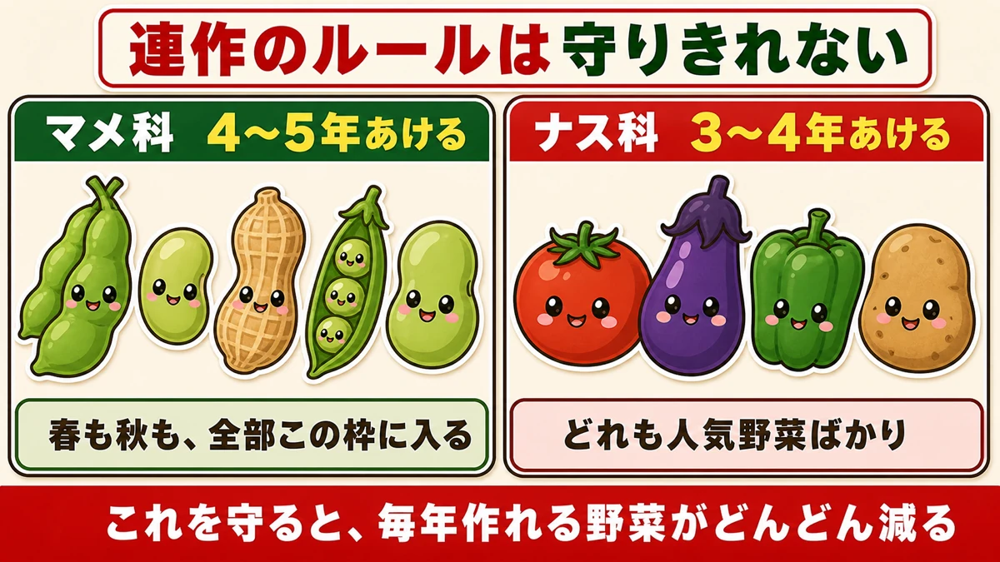
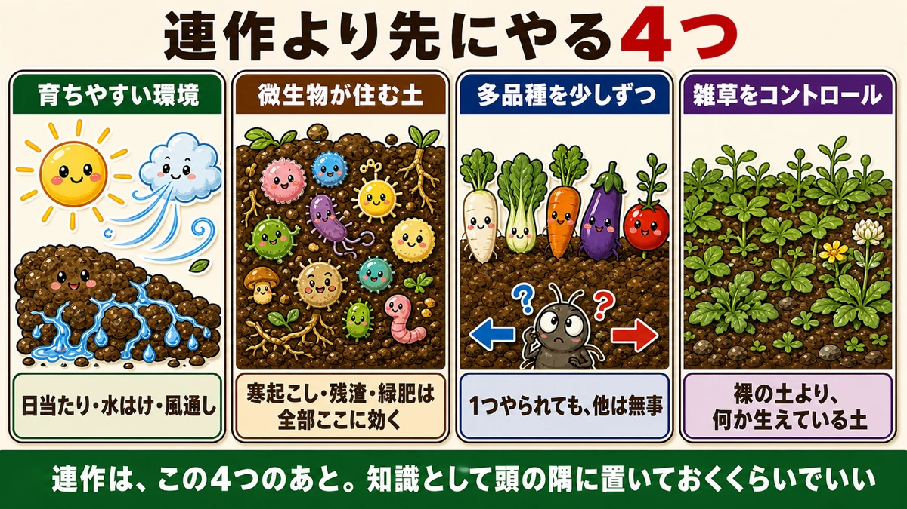
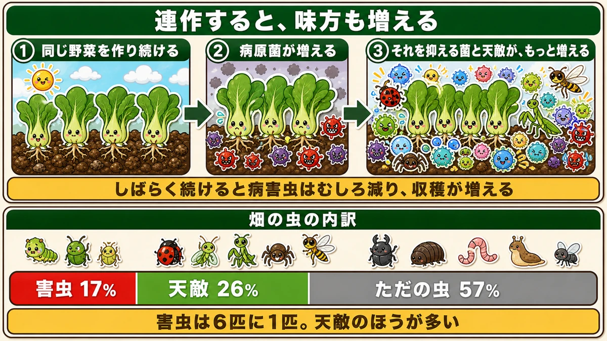
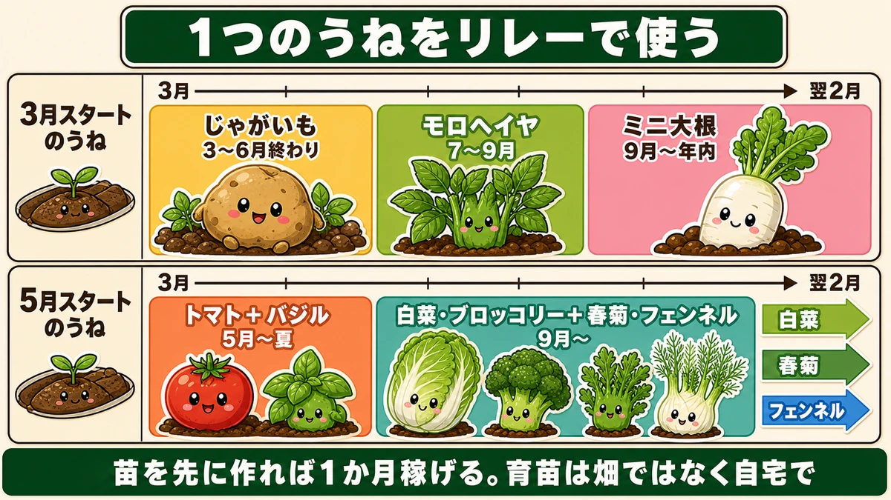
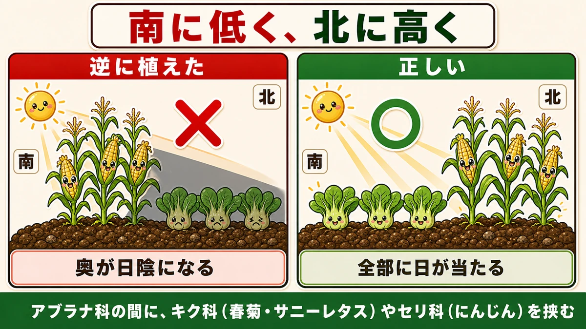
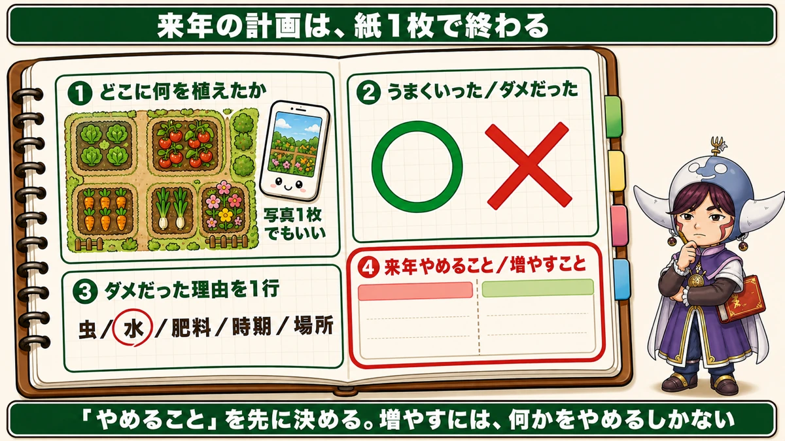

Replant problems matter less than you think 🗺️ Next year's plot, on one sheet of paper

🗨️ "I'm so worried about replant problems that the layout never changes."
🗨️ "Three years between nightshades? I don't have the space."
🗨️ "Where do I even start planning next year?"
Hello, I'm Eiko. Eight years of growing vegetables organically and without pesticides, and a teaching licence in science.
The point, up front:
In a home garden, replant problems don't need to worry you nearly as much as they do.
That's a provocative thing to write, so here's the reasoning. But first — four or five years between legumes, three or four between nightshades. Can you keep that?
I can't.
Counting why the rules can't be kept

What this diagram says （図解の文字）
- The rotation rules can't be kept
- Legumes: leave 4–5 years — spring and autumn crops both fall in this group
- Nightshades: leave 3–4 years — and they're all popular crops
- Follow this and the number of things you can grow each year keeps shrinking
- Legumes: edamame, French beans, peanuts, peas, broad beans
- Nightshades: tomatoes, aubergines, peppers, potatoes
Every one of them is a crop people actually want to grow.
Grow potatoes somewhere and that ground is closed to tomatoes, aubergines and peppers for years. Grow edamame in spring and the same bed can't have broad beans or peas in autumn.
At home-garden scale, the list of things you may grow shrinks every year.
I spent two years genuinely troubled by this — drawing the plot in a notebook, recording what went where when, solving it like a puzzle — and ending up leaving the sunniest bed empty. Which, looking back, was a waste.
Whose problem was it, originally?
This is the important part. Replant problems became a major topic in the context of large-scale monoculture using synthetic fertiliser and sprays — the same crop, across a whole field, year after year.
A home garden is the opposite: a small space with many crops in small amounts.
The premises are completely different, and only the rules were carried across. So of course they can't be kept.
An organic grower I spoke to, more than twenty years without sprays, said he had never once had trouble with replant problems.
Four things that matter more

What this diagram says （図解の文字）
- Four things that come before rotation
- Conditions a plant can grow in — light, drainage, air movement
- Soil that microbes live in — winter digging, returning residue, green manure all work here
- Many crops in small amounts — one gets hit and the others are fine
- Control the weeds rather than eliminating them — soil with something growing beats bare soil
- Rotation comes after these four. Knowing about it is enough
① Conditions the plant can grow in
Light, drainage, air movement. List ten reasons a crop did badly and these three are at the top, with rotation a long way down.
Planting into a shaded, badly drained corner and blaming rotation for the result — I did that.
② Soil that microbes live in
Winter digging, returning crop residue, sowing green manure — all the winter jobs feed into this.
In biologically rich soil, no single organism takes over easily. I think that's the most fundamental answer to replant problems there is.
③ Many crops, small amounts
Not a compromise — genuinely stronger. A large area of one crop is paradise for whatever specialises in it. Five crops in one bed and one being hit leaves the rest untouched.
The home gardener's wish to grow lots of different things turns out to be sound practice.
④ Treat weeds as green manure, not enemies
Control them rather than removing every one. It's the same principle as sowing a cereal or clover: ground being covered has value in itself, and bare soil keeps fewer microbes alive than soil with something growing on it.
Do these four, and rotation can sit at the back of your mind as something you know about. My garden became considerably more enjoyable once I thought of it that way.
The science: growing the same crop also increases your allies 🔬

What this diagram says （図解の文字）
- Growing the same crop increases your allies too
- ① keep growing the same crop → ② the pathogens increase → ③ the organisms that suppress them, and the predators, increase more
- Continue long enough and pest and disease pressure falls, and yields rise
- Insects found on a plot — pests 17%, natural enemies 26%, neither 57%
- One in six insects is a pest. There are more predators than pests
Grow the same crop repeatedly and the pathogens that attack it build up. That much is said often.
The story continues, though. As a pathogen increases, so do the organisms that suppress it.
As a pest increases, so do the predators that eat it — and according to the research, the suppressing side increases considerably more.
The result: continue long enough and pest and disease pressure actually falls, and the harvest rises. This is decline of disease after an outbreak.
Someone counted the insects
In a survey of ground-dwelling insects on a university farm:
- pests — 17%
- natural enemies — 26%
- neither, just insects — 57%
Pests are one-sixth of the total. And there are more predators than pests.
That number changed how I see a garden. I used to brace myself at every insect — and only one in six is an enemy.
Which means
If people don't interfere and wreck the environment, it tends towards health on its own.
Spray out all the insects and you remove the predators along with the pests.
Relay cropping: three crops from one bed

What this diagram says （図解の文字）
- Using one bed as a relay
- A bed starting in early spring — potatoes through to early summer → molokhia through late summer → baby mooli into the winter
- A bed starting in late spring — tomatoes with basil through summer → Chinese cabbage and broccoli with chrysanthemum greens and fennel from autumn
Rather than leaving beds resting, run them continuously with different families:
- Early-spring bed: potatoes → molokhia → baby mooli
- Late-spring bed: tomatoes with basil → Chinese cabbage and broccoli with chrysanthemum greens and fennel
Nightshade → mallow family → brassica; nightshade → brassica. The families change each time, and the bed is never empty.
Lay it out by height

What this diagram says （図解の文字）
- Short towards the sun, tall away from it
- Planted the wrong way round — the back is shaded
- Correct — everything gets light
- Put daisy-family (chrysanthemum greens, loose-leaf lettuce) or carrot-family (carrots) crops between the brassicas
In the northern hemisphere the sun comes from the south, so short crops to the south and tall crops to the north. (Reverse it south of the equator.) Get it backwards and everything behind the tall row is in shade.
Reviewing this year to decide next year

What this diagram says （図解の文字）
- Next year's plan fits on one sheet of paper
- ① what you planted where — one photograph will do
- ② what went well / what didn't
- ③ one line on why it didn't — insects / water / feed / timing / position
- ④ what to stop next year / what to do more of
- Decide what to stop first. To add anything, something has to go
- What you planted where — a single photograph is enough
- What worked and what didn't
- One line on why it didn't — insects, water, feed, timing, position
- What to stop, and what to do more of
And the order matters: decide what to stop first. To add anything, something has to come out.
To sum up
- ✅ The rotation rules come from large-scale monoculture and can't be kept in a small plot
- ✅ Four things come first: conditions / soil biology / many crops in small amounts / weeds controlled, not eliminated
- ✅ Pathogens build up — and so, faster, do the organisms that suppress them
- ✅ Of the insects on a plot: 17% pests, 26% predators, 57% neither
- ✅ Spraying removes the predators too
- ✅ Run beds as relays rather than resting them
- ✅ Short crops towards the sun, tall crops away from it
- ✅ Review on one sheet: where / what worked / why not / what to stop
- ✅ Decide what to stop before deciding what to add
You don't have to do all of it. Take one photograph of the plot today. That's step one of next year's plan 🗺️
Thank you for reading!